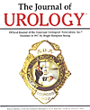
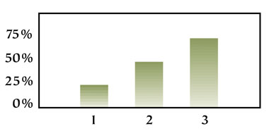

I. University of California, San Francisco Scientific Study: BetterMAN Traditional Chinese Medicine (TCM) Formula Improves Erectile Function in Rats—Rules Out Placebo Effect
|  | Erectile response was significantly better
in the (BetterMAN) treated group |
The first scientific evidence of the beneficial effects of BetterMAN on penile tissue was published in the prestigious Journal of Urology (November 2000). The JU article reported on a study conducted by leading urologist, Tom Lue, MD at the University of California San Francisco, Department of Urology.
Dr. Lue, known throughout the world for his influential research in the field of impotency, wondered if any of the herbal dietary supplement formulas which claimed to improve ED actually worked. Dr. Lue was intrigued by the reported positive clinical outcomes of BetterMAN. He and his colleagues set out to see if it indeed worked, and if there was a scientific basis for its purported benefits. According to Dr. Lue, "The effectiveness of a product for ED can be ascertained more accurately in animals than in humans due to the absence of the placebo effect, which can run as high as 40% in human studies."
With this in mind, Dr. Lue conducted his study with hypercholesterolemic rats. Hypercholesterolemia is a factor known to contribute to ED in men. Rats naturally develop ED around the age of 24 months, which is equivalent to 70 human years. Previous research found that rats consistently develop ED after being fed a 1% cholesterol diet for 4 months.
Accordingly, rats in this study were fed a 1% cholesterol diet for 4 months. During the last two-month period, two groups of rats were fed the BetterMAN formula in their drinking water at two different dosages: 25 mg/kg per day and 50 mg/kg per day, while one group was fed water only. A separate control group of rats was fed a normal diet. At the end of the 4 months, 100% of the BetterMAN-treated rats regained their erectile function as evidenced by the normal peak-sustained intracavernous pressure, while all the rats in the non-treated groups remained impotent.
The groups receiving the BetterMAN formula showed no significant difference in cholesterol levels, systolic blood pressure, and neuronal and endothelial nitric oxide synthase (NOS) levels compared to the control groups. The most interesting results were the significant increases in membrane caveolae, caveolin-1, and basic fibroblastic growth factor (bFGF) protein levels in the penile tissue of the BetterMAN-treated groups.
Caveolin-1 is the major component of caveolae, small bulb-shaped invaginations at or near the cell surface, which act to sequester membrane-bound ligands away from extra cellular space and facilitate their delivery to the cell cytoplasm. UCSF researchers suggest that the substantial increases of caveolin-1 and caveolae may compensate or overcome the harmful effects of hypercholesterolemia on the smooth muscle and endothelial cells, and thus, reverse erectile dysfunction in the treated groups.
Basic fibroblastic growth factor (bFGF) protein level was also significantly higher in the BetterMAN-treated group as revealed by Western blot. This finding suggests that treatment with BetterMAN results in up-regulation of bFGF, which may reverse the suppressive effect of hypercholesterolemia on the smooth muscle and endothelium.
The significance of this study is that it rules out the placebo effect. The study also indicates that the activities of BetterMAN are very different from that of PDE-5 inhibitors, such as Viagra. Dr. Lue and his colleagues concluded that it is likely that more factors may be involved in the formula's ability to treat ED, and that larger scale studies are needed to determine the mechanisms of action of the formula and its effect on other organ systems.

II. Ten-year Study of 5,000 Chinese Men Shows BetterMAN 75% Effective in Improving Sexual and Urinary Functions
Researchers at two of the largest medical hospitals in China compiled data on 5,000 men who had taken the BetterMAN formula between1988 and 1997. Patients ranged in age from 35 to 65 and exhibited clinical symptoms of male sexual dysfunction: erectile dysfunction, premature ejaculation, low libido; as well as urinary problems. Physicians questioned patients regarding each symptom and recorded improvements (if any) based on each patient's self-assessment during office visits at the end of each cycle of treatment.
After taking the BetterMAN formula for 3x20-day cycles, 95% of patients reported various degrees of improvement in sexual performance and urinary control. Seventy-five percent reported a high degree of satisfaction. In most case reports, patients only noticed small improvements after the first cycle with major symptoms subsiding after completing 3x20-day cycles of the formula.
Fifty patients who used the formula continuously for 3 years reported experiencing an improvement in overall wellbeing, greater energy levels, and an ability to maintain their desired level of sexual performance and urinary control.
The compiled data showed BetterMAN to be a well-balanced formula providing the following benefits:
This data provides evidence that the BetterMAN formula is effective for Chinese men. However, an herbal formula proven effective with one ethnic group may not be equally effective for another due to a wide variety of factors, e.g., diet and metabolic differences. Prior to its introduction into the US market a study was designed to determine if BetterMAN would have a similar success rate with American men.

III. Short-term Study with American Men: BetterMAN Found to be 70% Effective for Improving Sexual Functions and/or Urinary Control
Results from a 1997-98 independent study of American men indicate that even taken short-term, BetterMAN is 70% effective at enhancing sexual functions and promoting urinary control. In the study, 45 men between the ages of 41 and 71 were recruited to take BetterMAN at the suggested 3x20-day cycle (2 capsules daily after meals with a 3 day break between each bottle). The study was modeled after the A Brief Male Sexual Function Inventory developed at Harvard University to quantitatively measure the effects of BetterMAN pre-post three cycles of use.
The following results were tabulated by a third party:
Percentage of participants noticing improvements versus length of treatment:
25% after 1st cycle (bottle)
55% after 2nd cycle
70% after 3rd cycle

There were no side effects or adverse reactions, and after the study, 90% of participants elected to continue taking BetterMAN.
(From "RESULTS FROM THE BetterMAN PRODUCT SURVEY", March 1998 by Pathfinder Research Group, Acton, Massachusetts. BetterMAN, formerly NuMAN)

IV. 2001 Survey of American Users Confirms Claimed BetterMAN Sexual and Urinary Health Benefits
Two hundred and thirty BetterMAN users participated in a recent survey conducted between April 24 and May 8 2001. Participants were asked to complete an on-line questionnaire to assess whether BetterMAN had helped their sexual and/or urinary issues. A third party tabulated the results.
Of the 230 respondents, one-third had taken less than the recommended 3 bottles of BetterMAN, one-third had taken 3 bottles, and one-third had taken more than 3 bottles. Seventy percent were between 45 and 64 years old, 67% were married, and 96% described their current health status as either excellent (49%) or good (47%).
Even though 76 (33%) of the respondents had not finished taking the recommended 3-bottle cycle, the effectiveness rate of the BetterMAN formula with these respondents supports previous clinical results. Of those taking BetterMAN for the purpose of improving or enhancing a specific sexual and/or urinary health function, the following percentage noted an improvement:
More than half of the respondents (53%) claimed to have used Viagra, and 29% of those continued to use Viagra concurrently with BetterMAN in order to "Get the best of both products." Of those who had stopped using Viagra, the main reasons for no longer using it were:
Of those men who had never used Viagra, 54% cited a preference for a natural approach. Overall, men in the survey expressed a desire for a product offering a broad spectrum of benefits for their sexual health, rather than focusing on erection only.